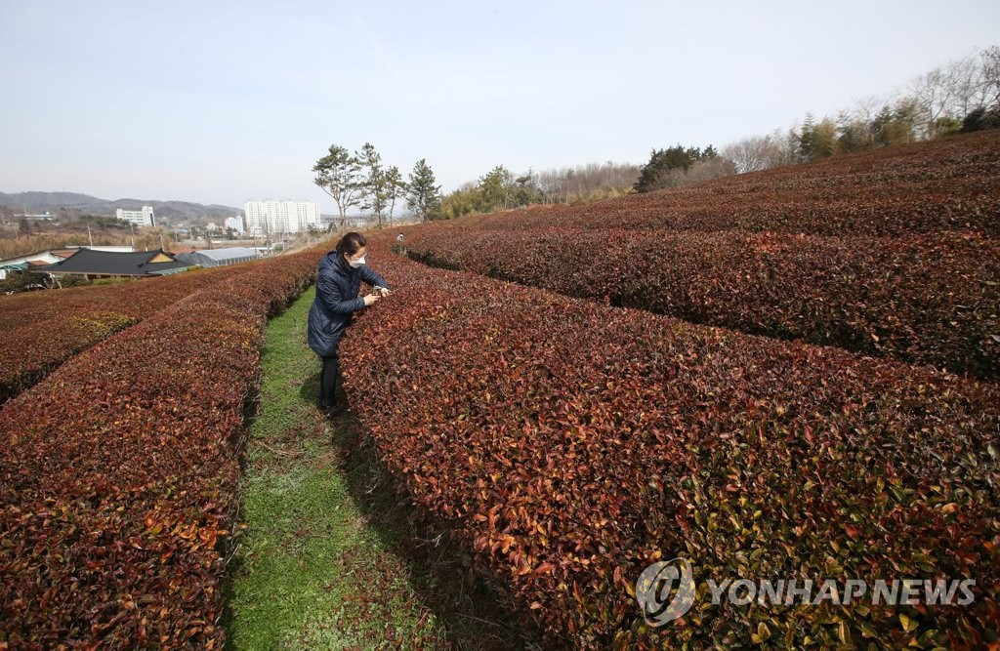
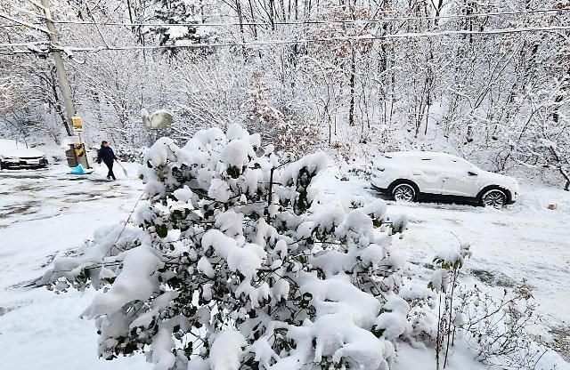
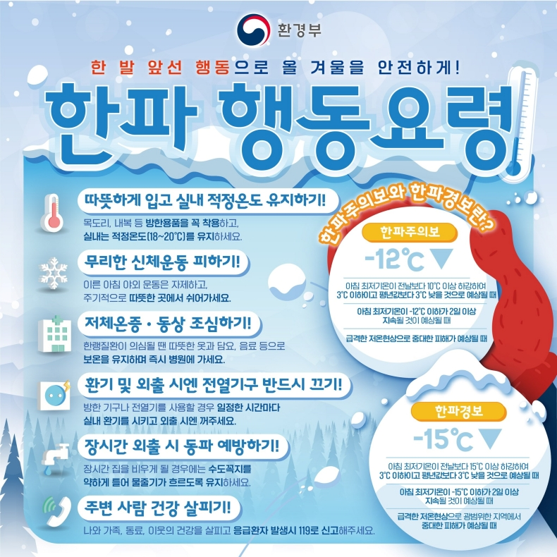

서아티비
인기 뉴스
더 많은 뉴스
유료 뉴스
ㅤ국내 한파 피해사례
ㅤ2021년 3월 전남 보성 녹차밭에서는 2개월 전에 왔던 한파 때문에
ㅤ녹차밭이 붉게 말러서 죽어버렸다.
ㅤ이곳 뿐만 아니라 다른 곳에서도 같은 현상이 일어나
ㅤ많은 농가들이 많은 피해를 보았다.
ㅤ평소의 녹차밭

ㅤ한파가 온 후 녹차밭
ㅤ올해 1월에도 한파가 찾아와 교통사고,동상 등 많은 피해가 발생했다.

ㅤ한파 행동 요령
